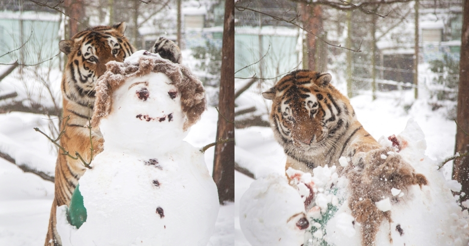

이미지 태그(img)
그림연습
이미지태그 : img src="그림파일명"
호랑이사진
 화난 눈사람 그림
화난 눈사람 그림
하늘 사진
 눈 풍경 사진
눈 풍경 사진
눈사람 모여 있는 사진
하늘 사진
동해물과 백두산이 마르고 닳도록 하느님이 보우하사 우리나라만세
무궁화 삼천리 화려강산 대한사람 대한으로 길이보전하세
남산위에 저 소나무 철갑을 두른듯 바람 서리 불변함은 우리 기상일세
무궁화 삼천리 화려강산 대한사람 대한으로 길이보전하세.
하늘 사진
하늘 사진
하늘 사진
하늘 사진
돌아가기